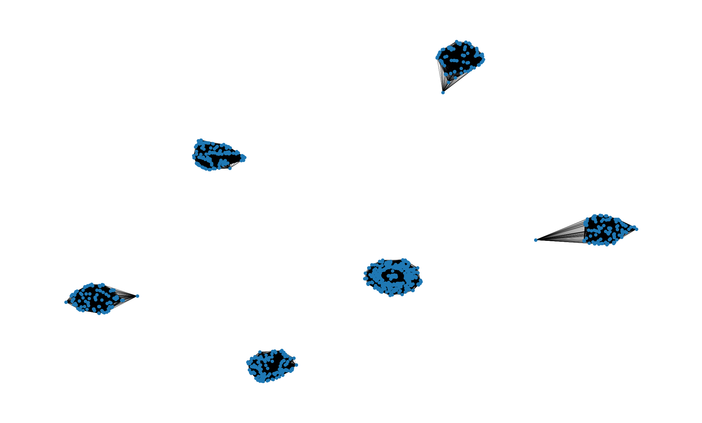

import pandas as pd
import networkx as nx
import matplotlib.pyplot as pltFor each variable in the dataset we compute instances neighbours as follows: if the variable is …
- … binary or nominal we say two instances are neighbours if they share the same value
- … ordinal we say two instances are neighbours if they share the same value or are close to some other values of the variable
raw_df = pd.read_csv('train.csv')raw_df.columns = raw_df.columns.str.lower()raw_df.head()| passengerid | survived | pclass | name | sex | age | sibsp | parch | ticket | fare | cabin | embarked | |
|---|---|---|---|---|---|---|---|---|---|---|---|---|
| 0 | 1 | 0 | 3 | Braund, Mr. Owen Harris | male | 22.0 | 1 | 0 | A/5 21171 | 7.2500 | NaN | S |
| 1 | 2 | 1 | 1 | Cumings, Mrs. John Bradley (Florence Briggs Th... | female | 38.0 | 1 | 0 | PC 17599 | 71.2833 | C85 | C |
| 2 | 3 | 1 | 3 | Heikkinen, Miss. Laina | female | 26.0 | 0 | 0 | STON/O2. 3101282 | 7.9250 | NaN | S |
| 3 | 4 | 1 | 1 | Futrelle, Mrs. Jacques Heath (Lily May Peel) | female | 35.0 | 1 | 0 | 113803 | 53.1000 | C123 | S |
| 4 | 5 | 0 | 3 | Allen, Mr. William Henry | male | 35.0 | 0 | 0 | 373450 | 8.0500 | NaN | S |
index_cols = ['passengerid']
tgt_col = ['survived']
bin_cols = ['sex']
nom_cols = ['name', 'ticket', 'cabin', 'embarked']
ord_cols = ['pclass', 'sibsp', 'parch']
rat_cols = ['age', 'fare']Sex
# Find neighbours based on sex column
nbh_cols = ['sex']
sex_nbh = raw_df[index_cols + nbh_cols].copy()
sex_nbh = (sex_nbh.merge(sex_nbh, on='sex', how='left')
.rename(columns={'passengerid_x': 'src', 'passengerid_y': 'dest'}))
sex_nbh = sex_nbh.loc[sex_nbh.src < sex_nbh.dest, ['src', 'dest']]
sex_nbh['weight'] = 1Passenger class
# Find neighbours based on passenger class
nbh_cols = ['pclass']
pclass_nbh = raw_df[index_cols + nbh_cols].copy()
pclass_nbh = (pclass_nbh.merge(pclass_nbh, on='pclass', how='left')
.rename(columns={'passengerid_x': 'src', 'passengerid_y': 'dest'}))
pclass_nbh = pclass_nbh.loc[pclass_nbh.src < pclass_nbh.dest, ['src', 'dest']]
pclass_nbh['weight'] = 1Sibsp
raw_df['sibsp'].value_counts().to_frame().reset_index()| sibsp | count | |
|---|---|---|
| 0 | 0 | 608 |
| 1 | 1 | 209 |
| 2 | 2 | 28 |
| 3 | 4 | 18 |
| 4 | 3 | 16 |
| 5 | 8 | 7 |
| 6 | 5 | 5 |
We decide to group as follows:
- 0: 0
- 1: 1
- 2: 2, 3
- 3: 2, 3, 4
- 4: >= 4
nbh_cols = ['sibsp']
sibsp_nbh = raw_df[index_cols + nbh_cols].copy()
sibsp_l2 = sibsp_nbh[sibsp_nbh.sibsp == 2]
sibsp_l3 = sibsp_nbh[sibsp_nbh.sibsp == 3]
sibsp_l4 = sibsp_nbh[sibsp_nbh.sibsp == 4]
sibsp_l4p = sibsp_nbh[sibsp_nbh.sibsp >= 4]
# Pairs where sibsp value is the same 0-0, 1-1, 2-2, ... and so on
sibsp_nbh = (sibsp_nbh.merge(sibsp_nbh, on='sibsp', how='left')
.rename(columns={'passengerid_x': 'src', 'passengerid_y': 'dest'}))
sibsp_nbh_23 = (sibsp_l2[['passengerid']].merge(sibsp_l3[['passengerid']], how='cross')
.rename(columns={'passengerid_x': 'src', 'passengerid_y': 'dest'}))
sibsp_nbh_23.values.sort()
# Remove duplicated
sibsp_nbh = sibsp_nbh.loc[sibsp_nbh.src < sibsp_nbh.dest, ['src', 'dest']]Generate neighbours overall edges
# Add neighbours edges between every
nbh_edges = pd.concat([sex_nbh, pclass_nbh])
nbh_edges = nbh_edges.groupby(['src', 'dest']).sum().reset_index()
# In our first analysis, since we calculated edges over two variables we will say two instances are neighbours if they were close over each of the two variables
n_feats = 2
nbh_edges = nbh_edges.loc[nbh_edges.weight == n_feats]# Create the graph
nbh_nodes = list(raw_df.passengerid.unique())
nd_color = ['red' if surv == 1 else 'blue' for surv in raw_df.survived]
nbh = nx.Graph()
nbh.add_nodes_from(nbh_nodes)
nbh.add_edges_from([(src, dest) for src,dest in zip(nbh_edges.src, nbh_edges.dest)])Compute connected components
conn_comp = nx.connected_components(nbh)
dfs = list()
idx = 0
for c in conn_comp:
dfs.append(pd.DataFrame(data={'passengerid':list(c), 'conn_comp_idx':idx}))
idx += 1
nbh_tgt = pd.concat(dfs).sort_values('passengerid')
nbh_tgt = nbh_tgt.merge(raw_df[index_cols + tgt_col], on='passengerid', how='left')nbh_tgt.groupby('conn_comp_idx').agg({'survived': ['count', 'sum', 'mean']})| survived | |||
|---|---|---|---|
| count | sum | mean | |
| conn_comp_idx | |||
| 0 | 347 | 47 | 0.135447 |
| 1 | 94 | 91 | 0.968085 |
| 2 | 144 | 72 | 0.500000 |
| 3 | 122 | 45 | 0.368852 |
| 4 | 76 | 70 | 0.921053 |
| 5 | 108 | 17 | 0.157407 |
Visualization
# Create the graph visualization
plot_options = {"node_size": 10, "with_labels": False, "width": 0.15}
pos = nx.spring_layout(nbh, iterations=15, seed=1721)
fig, ax = plt.subplots(figsize=(15, 9))
ax.axis("off")
nx.draw_networkx(nbh, pos=pos, ax=ax, **plot_options)